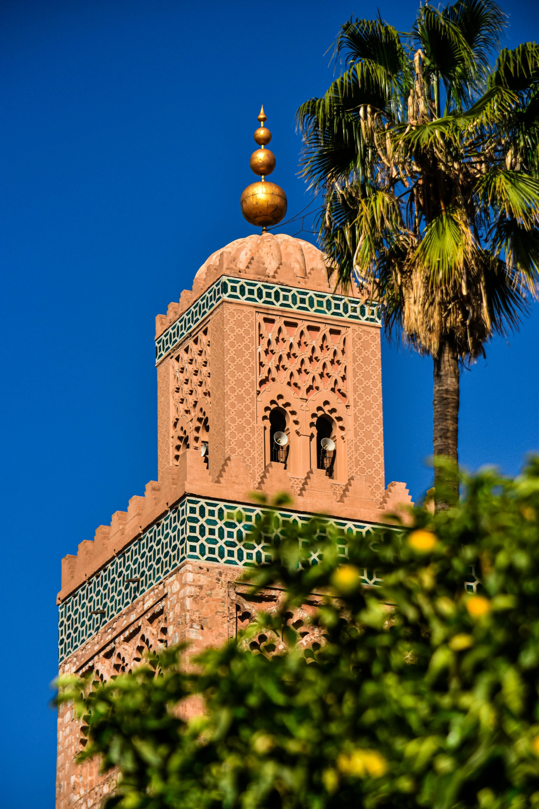
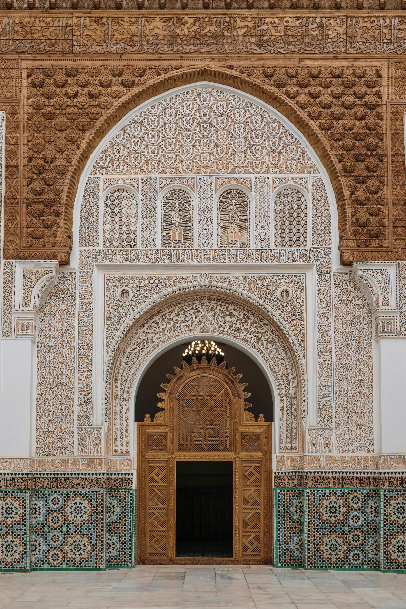
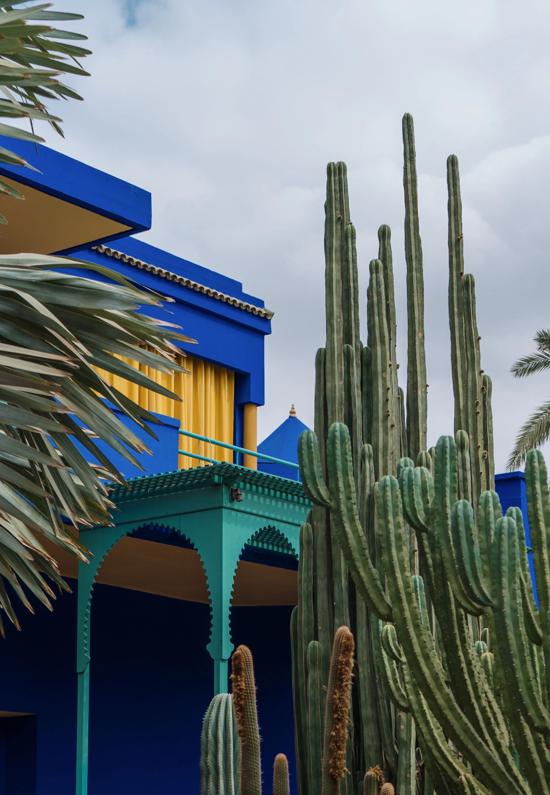

Explore the hidden gems and secret paths of the historical Medina, and the less-touristy parts of the souks—guided by a trusted, licensed local who grew up in the city and knows it inside out.
I'm Chafik, a licensed local tour guide based in Marrakech, Morocco. I’ve spent my life navigating the historic medina, knowing precisely which hidden alley in the souks leads to the finest traditional lantern makers, which quiet rooftop catches the best sunset, and which street food stalls serve authentic tagine just for locals. My goal is to take you beyond the typical tourist traps and show you the real Marrakech I live in.
Four real, tested experiences — each one can run as a small public group or fully private. Full details and pricing on the tours page.